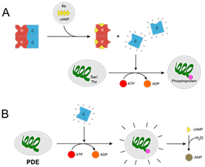
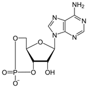

In cell biology, protein kinase A (PKA[N 1]) is a family of enzymes whose activity is dependent on cellular levels of cyclic AMP (cAMP). PKA is also known as cAMP-dependent protein kinase. Protein kinase A has several functions in the cell, including regulation of glycogen, sugar, and lipid metabolism It should also not be confused with AMP-activated protein kinase – which, although a member of the protein kinase superfamily and a Ser/Thr kinase, may have opposite effects– nor be confused with cyclin-dependent kinases (Cdks), nor be confused with the acid dissociation constant pKa.
Protein kinase A, more precisely known as adenosine 3',5'-monophosphate (cyclic AMP)-dependent protein kinase was discovered by chemists H. Fischer and Edwin G. Krebs in 1968. They won the Nobel Prize in Physiology or Medicine in 1992 for their work on phosphorylation and dephosphorylation and how it is related to protein kinase A activity. PKA is one of the most widely researched protein kinases, in part because of its uniqueness; out of 540 different protein kinase genes that make up for human kinome, only one other protein kinase, Casein kinase 2, is known to exist in a physiological tetrameric complex. The diversity of mammalian PKA subunits was realized after Dr. Stan Knight and others identified possible four subunit C genes and presence of four R subunit genes. In 1991, Susan Taylor and et al. crystallized the PKA Cα subunit which revealed the bi-lobe structure of the protein kinase core for the very first time, providing a blueprint for all the other protein kinases in a genome ('the kinome').
The PKA holoenzyme exists as a tetramer, although higher order structures form in cells, where PKA is targeted to specific components. The classical PKA holoenzyme structure consists of two regulatory subunits and two catalytic subunits. The catalytic subunit contains the active site, a series of canonical residues found in protein kinases that bind and hydrolyse ATP and a domain to bind the regulatory subunit. The regulatory subunit has domains to bind to cyclic AMP, a domain that interacts with catalytic subunit and an auto inhibitory domain. There are two major forms of regulatory subunit; RI and RII.
PKA is also commonly known as cAMP-dependent protein kinase, because it has traditionally been thought to be activated through release of the catalytic subunits when levels of the second messenger cAMP rise in response to a variety of signals. However, recent studies evaluating the intact holoenzyme complexes, including regulatory AKAP-bound signalling complexes, have suggested that the local sub cellular activation of the catalytic activity of PKA might proceed without physical separation of the regulatory and catalytic components, especially at physiological concentrations of cAMP. In contrast, experimentally induced supra physiological concentrations of cAMP are able to cause separation of the holoenzymes, and release of the catalytic subunits. Extracellular hormones such as glucagon and epinephrine begin an intracellular signalling cascade that triggers protein kinase A activation by first binding to a G protein–coupled receptor (GPCR) on the target cell. When a GPCR is activated by its extracellular ligand, a conformational change is induced in the receptor that is transmitted to an attached intracellular heterotrimeric G protein complex by protein domain dynamics. The Gs alpha subunit of the stimulated G protein complex exchanges GDP for GTP and is released from the complex. The activated Gs alpha subunit binds to and activates an enzyme called adenylyl cyclase, which, in turn, catalyzes the conversion of ATP into cyclic adenosine monophosphate (cAMP) – which directly increases cAMP levels. Four cAMP molecules are able to bind to the two R-subunits, this is done by two cAMP molecules binding to each of the two cAMP binding sites (CNB-B and CNB-A) which produces a conformational change in the regulatory subunits on a PKA enzyme causing the subunits to detach and unleashing the two (now activated) catalytic subunits. Once released from their inhibitory Regulatory subunit, the catalytic subunits can go on to phosphorylate a huge number of other proteins in the minimal substrate context Arg-Arg-X-Ser/Thr., although they are still subject to other layers of regulation, include modulation by the heat stable pseudosubstrate inhibitor of PKA, termed PKI.The mechanisms of further effects may be divided into direct protein phosphorylation and protein synthesis:
The liberated catalytic subunits can then catalyze the transfer of ATP terminal phosphates to protein substrates at serine, or threonine residues. This phosphorylation usually results in a change in activity of the substrate. Since PKAs are present in a variety of cells and act on different substrates, PKA regulation and cAMP regulation are involved in many different pathways. In direct protein phosphorylation, PKA directly either increases or decreases the activity of a protein. In protein synthesis, PKA first directly activates CREB, which binds the cAMP response element, altering the transcription and therefore the synthesis of the protein. In general, this mechanism takes more time (hours to days).
The Serine/Threonine residue of the substrate peptide is orientated in such a way that the hydroxyl group faces towards the gamma phosphate group of the bound ATP molecule. Both the substrate, ATP, and two Mg2+ ions form intensive contacts with the catalytic subunit of PKA. In the active conformation, the C helix packs against the N-terminal lobe and the Aspartate residue of the conserved DFG motif chelates the Mg2+ ions, assisting in positioning the ATP substrate. The triphosphate group of ATP points out of the adenosine pocket for transfer of gamma-phosphate to the Serine/Threonine of the peptide substrate. There are several conserved residues, include Glutamate (E) 91 and Lysine (K) 72, that mediate the positioning of alpha- and beta-phosphate groups. The hydroxyl group the peptide substrate's Serine/Threonine attacks the gamma phosphate group at the phosphorus via an SN2 nucleophilic reaction, which results in the transfer of the terminal phosphate to the peptide substrate and cleavage of the phosphodiester bond between the beta-phosphate and the gamma-phosphate groups. PKA acts as a model for understanding protein kinase biology, with the position of the conserved residues helping to distinguish the active protein kinase and inactive pseudokinase members of the human kinome.
Downregulation of protein kinase A occurs by a feedback mechanism uses a number of cAMP hydrolyzing phosphodiesterase enzymes, which is one of the substrates activated by the kinase. Phosphodiesterase quickly converts cAMP to AMP, thus reducing the amount of cAMP that can activate protein kinase A. PKA is also regulated by a complex series of phosphorylation events, which can include modification by autophosphorylation, and phosphorylation by regulatory kinases, such as PDK1 Thus, PKA is controlled, in part, by the levels cAMP. Also, the catalytic subunit itself can be down-regulated by phosphorylation.
The regulatory subunit dimer of PKA is important for localizing the kinase inside the cell. The dimerization and docking (D/D) domain of the dimer binds to the A-kinase binding (AKB) domain of A-kinase anchor protein (AKAP). The AKAPs localize PKA to various locations (e.g., plasma membrane, mitochondria, etc.) within the cell. AKAPs bind many other signaling proteins, creating a very efficient signaling hub at a certain location within the cell. For example, an AKAP located near the nucleus of a heart muscle cell would bind both PKA and phosphodiesterase (hydrolyzes cAMP), which allows the cell to limit the productivity of PKA, since the catalytic subunit is activated once cAMP binds to the regulatory subunits.
PKA phosphorylates proteins that have the motif Arginine-Arginine-X-Serine exposed, in turn (de)activating the proteins. As protein expression varies from cell type to cell type, the proteins that are available for phosphorylation will depend upon the cell in which PKA is present. Thus, the effects of PKA activation vary with cell type:
Adrenaline and glucagon affect the activity of protein kinase A by changing the levels of cAMP in a cell via the G-protein mechanism, using adenylate cyclase. Protein kinase A acts to phosphorylate many enzymes important in metabolism. For example, protein kinase A phosphorylates acetyl-CoA carboxylase and pyruvate dehydrogenase. Such covalent modification has an inhibitory effect on these enzymes, thus inhibiting lipogenesis and promoting net gluconeogenesis. Insulin, on the other hand, decreases the level of phosphorylation of these enzymes, which instead promotes lipogenesis. Recall that gluconeogenesis does not occur in myocytes.
PKA helps transfer/translate the dopamine signal into cells in the nucleus accumbens, which mediates reward, motivation, and task salience. The vast majority of reward perception involves neuronal activation in the nucleus accumbens, some examples of which include sex, recreational drugs, and food. Protein Kinase A signal transduction pathway helps in modulation of ethanol consumption and its sedative effects. A mouse study reports that mice with genetically reduced cAMP-PKA signalling results into less consumption of ethanol and are more sensitive to its sedative effects.In skeletal muscle Protein Kinase A is directed to specific sub cellular locations after tethering to Protein kinase A anchoring proteins (AKAPs). Sarcoplasmic Reticulum Ca2+ release channel or Ryanodine receptor (Ryr) co-localizes with the muscle AKAP. RyR phosphorylation and efflux of Ca 2+ is increased by localisation of PKA at RyR by mAKP.
PKA has always been considered important in formation of a memory. Reductions in expression activity of DCO (PKA catalytic subunit encoding gene) can cause severe learning disabilities, middle term memory and short-term memory. Long term memory is dependent on the CREB transcription factor, regulated by PKA. A study done on drosophila reported that an increase in PKA activity can affect short term memory. However, a decrease in PKA activity by 24% inhibited learning abilities and a decrease by 16% affected both learning ability and memory retention. Formation of a normal memory is highly sensitive to PKA levels.